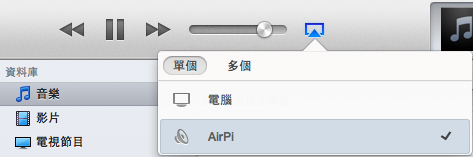
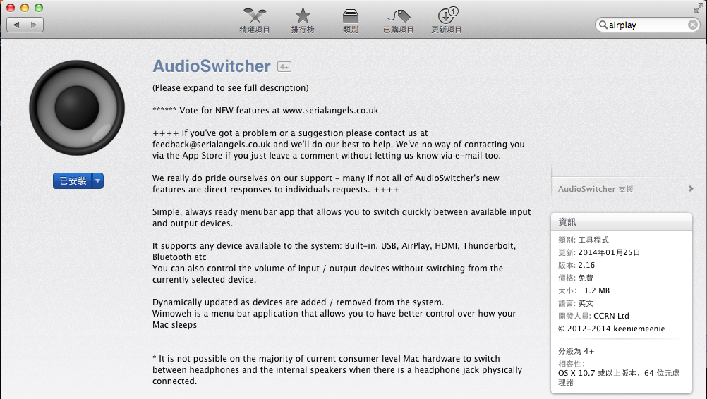
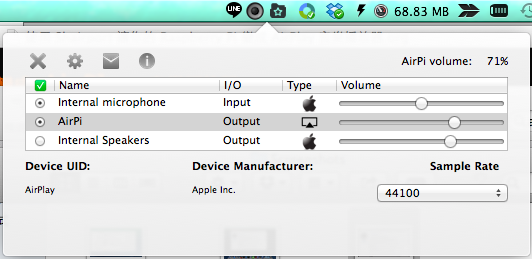

由於 shairport 原作者已經不打算維護該專案，因此請參考我的另外一篇文章: 使用 shairport-sync 在 Raspberry Pi 上上建立 AirPlay 音樂播放器
有沒有想過在家不接線就可以隨便控制喇叭播放自己的手機 or 筆電的音樂或影 片呢?這個構想實際上目前已經有產品在市面上流通，那就是 Apple TV 或是 chromecast ，但是對於我們這種在外地租屋的人而言，遠端播放影片好像不怎 麼吸引人，遠端播放音樂比較有用。
為什麼這麼說呢？如果我購買了一台好一點的 DAC 設備和喇叭，結果只能用特定的 器材才能透過他播放好聽的音樂，不是很浪費嘛？有沒有方法可以讓我把音樂直 接透過網路傳送給我的音響設備呢? 有，這就是 Shairport 。
Shairport 其實是模擬 AirPort Express 的程式，目前已經可以在 Windows、 Linux、Max OSX 上面執行，將你的電腦變成 AirPlay 接收器，不過現在 Raspberry Pi 這麼流行，擺著不用也浪費，就讓我們把 Raspberry Pi 變成能夠接收音樂的 AirPi 吧，這樣只要你的設備具有可以透過 AirPlay 播放音樂的功能，便可以透 過這台 AirPi 來播放聲音，不過有點要注意，你連線的網路必須和 Raspberry Pi 在同一個網域才行。
編譯並安裝 shairport
首先，我們要安裝一些軟體來幫助我們編譯並安裝 Shairport。
sudo apt-get install git libao-dev libssl-dev libcrypt-openssl-rsa-perl \
libio-socket-inet6-perl libwww-perl avahi-utils libmodule-build-perl
接著，要安裝 perl-net-sdp
git clone https://github.com/njh/perl-net-sdp.git perl-net-sdp
cd perl-net-sdp
perl Build.PL
sudo ./Build
sudo ./Build install
該裝的軟體都裝完以後，我們就可以下載最新的 shairport 程式碼並安裝到系統 內。
git clone https://github.com/hendrikw82/shairport.git
cd shairport
./configure --prefix=/usr
make
sudo make install
完成後我們就可以先來測試了，在這邊我將我的 AirPlay 設備命名為 AirPi。
pi@AirPi ~/shairport $ shairport -a 'AirPi'
完成後如果你的 MacBook 和 Raspberry Pi 在同一個網域的話，你可以在 iTunes 看到他，選擇 AirPi 並播放音樂就可以聽到從 Raspberry Pi 播放出來的音樂囉。

安裝 AudioSwitcher 讓你的 MacBook 透過 AirPlay 輸出聲音
在 MacBook 下，如果我們希望能夠將所有的聲音都透過 AirPlay 輸出，可以透過 AudioSwitcher 來幫忙進行聲音輸出的切換，這個好用的程式可以在 App Store 下 找到。

安裝完成後並執行，你就可以方便切換輸出聲音的設備了。

現在，當你設定為使用 AirPi 作為輸出設備的時候，你播放的音樂都會透過 Raspberry Pi 傳送到音響中。
讓 Shairport 開機後自動啟動
如果我們今天想要在 Raspberry Pi 重新開機後，馬上啟動 shairport 功能，那要 怎麼做呢?
事實上，在我們編譯 shairpot 的目錄下，有一個 scripts 的資料夾，結構
如下
pi@AirPi ~/shairport $ tree -N -L 2 scripts/ scripts/ ├── debian │ ├── default │ ├── init.d │ └── logrotate.d ├── PKGBUILD └── shairport.service 4 directories, 2 files
如果你和我一樣，也是 Rasbian 的使用者，你需要將 debian 資料夾下的所有檔案，
複製到 /etc 目錄下，命令如下
pi@AirPi ~/shairport $ sudo cp -rf scripts/debian/* /etc/
接下來，我們必須修改 /etc/default/shairport 這個檔案，指定使用者以及
其他想使用的設定，在這邊我將 sharport 的使用者修改為 pi 這個使用者
# User and group under whihc shairport should be run # user should have permission to output sound # Check the audio output documentation for details. USER=pi #GROUP=nogroup
修改完成後，就可以以 daemon 的形式去啟動 sharport 了
pi@AirPi ~/shairport $ sudo /etc/init.d/sharport start [ ok ] Starting Shairport Airtunes emulator: shairport.
接著，再把 shairport 加入開機啟動項目就大功告成了 !!
pi@AirPi ~/shairport $ sudo update-rc.d shairport defaults update-rc.d: using dependency based boot sequencing insserv: warning: script 'mathkernel' missing LSB tags and overrides
將 USB DAC 設定為預設的播放介面
Raspberry Pi 內建的耳機孔輸出音質和筆電差不多，如果想要能夠更開心的聽音 樂，買一台 DAC 讓輸出的音質變更好是必要的，但是如果你用的是 USB DAC，插 上去後並不會變成 Raspberry Pi 預設的聲卡，因此我們要自己動手來將他變成預 設的聲音設備。
首先編輯 /etc/modprobe.d/alsa-base.conf 。
root@AirPi:/home/pi# vi /etc/modprobe.d/alsa-base.conf
將裡面關於 snd-usb-audio 的設定，改成如下
# Keep snd-usb-audio from beeing loaded as first soundcard options snd-usb-audio index=0
修改後，重新啟動 Raspberry Pi 來套用你的修改
root@AirPi:/home/pi# reboot
接著在使用 aplay -l 你就會看到 USB DAC 變成預設的聲音輸出了
root@AirPi:/home/pi# aplay -l **** List of PLAYBACK Hardware Devices **** card 0: DAC [USB Audio DAC], device 0: USB Audio [USB Audio] Subdevices: 0/1 Subdevice #0: subdevice #0 card 1: ALSA [bcm2835 ALSA], device 0: bcm2835 ALSA [bcm2835 ALSA] Subdevices: 8/8 Subdevice #0: subdevice #0 Subdevice #1: subdevice #1 Subdevice #2: subdevice #2